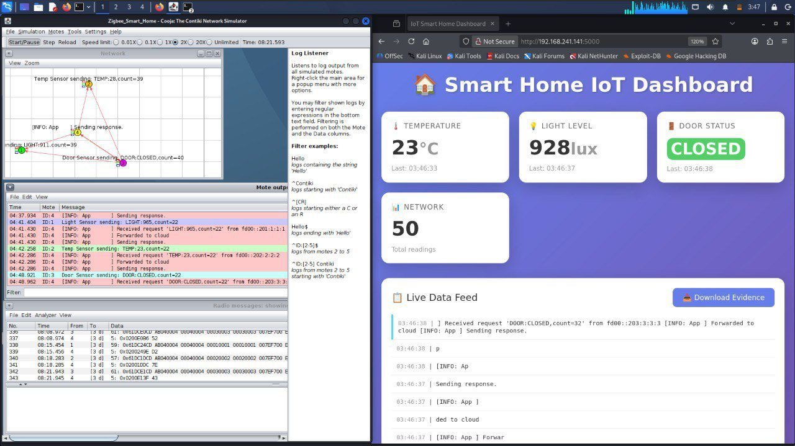
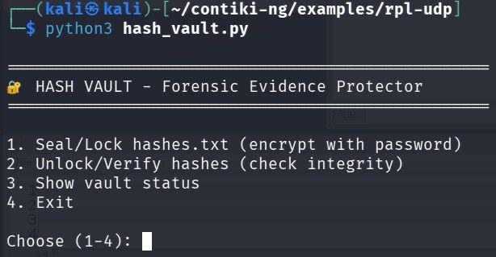

Forensics
AutopsyFTK ImagerVolatility
Backed by eCDFP and the KAUST digital forensics module.
مرحباً ألف!
بما إنك دخلت موقعي، تدريبي عليك
Welcome! Since you're here, my co-op is on you
I'm a cybersecurity student at King Khalid University, specializing in digital forensics and incident response. I like the moment a messy disk image turns into a clear timeline.
I hold eCDFP, eCIR and Security+. I code in Python, Java and C, and I build tools to test what I learn.
Digital forensics track. The co-op internship takes place in the second semester (Jan – Jun 2027). Activities: Cybersecurity Club (organizing committee head), Programming Club, Technology Club and the GDG on Campus KKU organizing team.
Professional certifications first. Course completions are labeled as course completions.
Hands-on incident response: SIEM operations, PCAP analysis and containment.
Hands-on digital forensics: Windows file and disk analysis, evidence collection and network analysis.
Core cybersecurity: network security, risk management and incident response.
With Site and the National Cybersecurity Authority. Digital forensics, malware analysis, IoT and network security, web security and penetration testing.
Incident analysis, incident reporting and response procedures.
Huawei states these certificates prove course completion and do not represent its official HCIA certification.
Group lab project (team of 5, King Khalid University). We built a simulated smart-home IoT network in Cooja (Contiki-NG), attacked it with fake sensor data, and investigated it as a forensic case: collected cloud logs and a network capture (PCAP), protected the evidence with SHA-256 hashes, identified the attacker's device in Wireshark, rebuilt the timeline, and wrote a final report with root cause and mitigations.


A forensic web tool that checks images and clips for deepfakes and AI-generated content.
You upload an image or a clip, and CYBERMAN turns the analysis into a forensic report with confidence scores and an anomaly heatmap.
HTML, CSS and vanilla JavaScript. No external frontend libraries.
A serverless function on Vercel that talks to the detection API.
The API key lives in environment variables on the server, never in the browser.
Training, volunteering and student leadership.
Two sessions: January 2026 at KAUST and June – July 2026 at King Khalid University. Covered cryptography, network and IoT security, web security, social engineering, penetration testing, digital forensics and malware analysis.
Seven hours of incident analysis, reporting and response.
For strengthening cybersecurity awareness and helping raise the security level of university systems.
I'm looking for a cybersecurity co-op in the second semester (Jan – Jun 2027): digital forensics, incident response or SOC work. I'm open to KSA-based and remote roles.